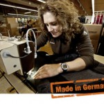
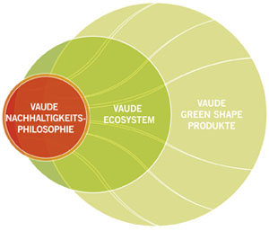

Meine Wanderschaft nähert sich dem Ende
Sie erinnern sich noch? Drei Walzstationen habe ich auf meiner Wanderschaft seit Herbst 2013 absolviert, nun folgt nächste Woche die 4. und damit auch letzte. Noch einmal zur Erinnerung:
- Station, München: InterNations
- Station, Engen: allsafe JUNGFALK
- Station, Berlin: Königsdruck
Besonders erfreulich finde ich die Verschiedenartigkeit der Branchen, bei denen ich zu Gast sein durfte und noch darf. Nach den o.g. Stationen, also einem Expat-Service, einem Familienunternehmen im Bereich Ladegutsicherung und Transportsysteme sowie einer inhabergeführten Design-Druckerei erwartet mich nun die deutsche Outdoor-Branche. VAUDE , mit Sitz in Tettnang nahe dem Bodensee, versteht sich als modernes Familienunternehmen auf dem Weg zu Europas umweltfreundlichstem Outdoor-Ausrüster und damit auch als Pionier. Mein Ansatz des papierlosen Büros passt also wunderbar zu deren Ecosystem. Natürlich ist genau das sowie mein „Spitzname“ Mrs. Paperless der Firmenleitung nicht entgangen und zusammen mit meiner Walz-Idee sofort auf offene Ohren gestoßen. Auch wenn wir einen Termin dafür erst im Januar finden konnten. Dazu merke ich gerne an, dass bei einem optimalen Zeitmanagement Flexibilität für Terminplanungen gar kein Problem mehr darstellt – das habe ich längst verinnerlicht.

Und noch ein paar Fakten zu meiner letzten Station: gegründet 1974 von Albrecht von Dewitz, 1994 lässt sich Hightech-Funktionskleidung zum 1. Mal zu 100% recyclen, 2001 wird zur Vereinbarkeit von Beruf und Familie das VAUDE Kinderhaus eröffnet, 2009 übernimmt Tochter Antje die Geschäftsführung… da wundern mich die zahlreichen Auszeichnungen nicht.Und mit 500 Mitarbeitern deckt VAUDE folgende Geschäftsbereiche ab:
- Mountain Sports: Funktionsbekleidung, Schuhe, Rucksäcke, Zelte, Schlafsäcke, Kinderbekleidung, Kinderausrüstung, Accessoires
- Bike Sports: Bike-Bekleidung, Bike-Schuhe, Rucksäcke, Radtaschen, Accessoires, Bike-Bekleidung/-Rucksäcke für Kinder
- Packs’n Bags: Taschen, Rucksäcke, Reisegepäck, Kinderrucksäcke und –taschen.
Warum ich das Unternehmen hier so ausführlich darstelle? Ganz einfach: jede meiner Walzstationen ist eine deutsche, inhabergeführte Firma, die den Mut bewiesen hat, die Walz mit mir zu gehen. Und es ist mir wirklich ein Bedürfnis, diese „Hidden Champions“ meinen Lesern vorzustellen.
Übrigens habe ich bereits einen Vorgeschmack zur grünen Unternehmensphilosophie bekommen – es steht bereits ein firmeneigenes E-Bike für mich zur Verfügung 😉
So wird Mrs. Paperless mit „The Spirit of Mountain Sports“ den umweltfreundlichen Weg mit vorantreiben! Freuen Sie sich auf meinen weiteren Bericht, dann aus Tettnang!

Weitere Artikel

Meine letzte Walzstation – schee war’s
Der Organizer verabschiedet sich von einer insgesamt wunderbaren Walz. Meine letzte Walzwoche liegt hinter mir und die Eindrücke zu Vaude in Tettnang klingen noch nach. Mein erster Eindruck Schon am ersten Tag traf ich auf eine …
Bericht zur 2. Walzstation – mein Fazit
Für mich war es ein großartiges Erlebnis, aber auch eine Herausforderung, in einer Beta-Unternehmenskultur zu arbeiten. Oftmals war ich diejenige, die sich an diese Kultur gewöhnen musste und nicht die Mitarbeiter an mich als …